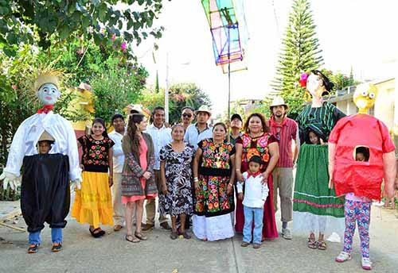

El restaurador de arte contemporáneo y el arte de activación social
María del Carmen Tostado Unzueta
"El arte es un juego entre los hombres de todas las épocas" (Duchamp)
Introducción
Hasta el día de hoy, el arte se ha transformado, alimentándose de las situaciones sociales, políticas y económicas del momento en el que es creado. Este se desenvuelve de maneras particulares e impredecibles, según en el contexto en el que se libere; y cuando se le posiciona en el tiempo y espacio precisos, con la causa correcta, llega a ser una buena herramienta de acción social.
Es posible decir que, junto con la evolución del arte, el quehacer del conservador-restaurador se ha puesto en posiciones cada vez menos cómodas, al grado de, en ocasiones, no saber cómo proceder sin “traicionar” los criterios y límites de intervención que, a lo largo de su formación académica, adoptó y creyó casi absolutos.
El arte tradicional1, fue creado con técnicas y materiales que, según los conocimientos y alcances del conservador y su equipo de investigación, pueden llegar a comportarse de formas casi predecibles. Por su parte, el arte contemporáneo presenta un reto para los aventurados en la conservación de este tipo de obra, pues los materiales, su empleo y su intención, pueden llegar a ser todo y nada a la vez. En el 2004 se puso en marcha El Good Rumor Project (Proyecto del buen rumor), del artista Måns Wrange, el cual consistía en crear, en San Diego, una red de rumores positivos en relación con los habitantes de Tijuana, y viceversa, con el fin de experimentar el impacto sociopolítico y cultural de los chismes. En este caso, el único elemento (de apoyo) material presente en la obra fue una instalación con un mapa en el que se mostraba la forma en que funcionaba la red de rumores entre fronteras y un par de televisiones en las que se transmitían entrevistas a los “nodos” de comunicación, reemplazando los diálogos por música (Manswrange.webflow.io, 2017).
Figura 1. Apoyo visual de la obra en el que se muestra la red de esparcimiento de rumor y entrevistas musicalizadas. Fotografía obtenida de la página web inSite.org.mx.
A diferencia del ejemplo anterior, Ishi’s light (2003) de Anish Kapoor (Anishkapoor.com, 2017), una de las múltiples piezas especulares artista, sustenta su existencia en la materia y en las interacciones que esta tiene con la iluminación y el posicionamiento que se le da en el espacio en el que es expuesta.
Figura 2. Ishi’s Light (2003), Anish Kapoor. Fibra de vidrio y pintura. 315×258×244 cm. Imagen obtenida de la página del artista.
¿Cómo entender a los materiales modernos, cuando vivimos en un mundo de patentes y recetas secretas? ¡¿Cómo tratar a una obra que probablemente se creó para no existir o que va más allá de la materia?!
Desde hace años, la materia ha sido considerada el campo de acción principal del restaurador, y su conservación ha sido un tema de discusión desde los tiempos de Cesare Brandi, hasta el día de hoy. ¿Qué pasaría si tuviera que enfrentarse a la conservación de algo etéreo, pero al mismo tiempo tan tangible, como el arte de activación social2?
En este texto se buscará encontrar una respuesta a la pregunta anterior, encaminándose a exponer la idea de que el conservador-restaurador que no abre su mente y se actualiza, se vuelve obsoleto. Para hacerlo se propone la revisión de tres ejemplos de arte de activación social.
El arte de activación social ¿Cómo es que un conjunto de acciones de índole diversa puede llegar a convertirse en obra de arte?
El arte de activación social se refiere a aquel que se crea en comunidad o que es producto de un trabajo social-comunitario, trayendo consigo resultados benéficos para la sociedad que vive o transita en torno a él. Según la estética relacional de Nicolas Borraiud, el arte, desde el principio de los tiempos, ha tenido algo de relacional, en mayor o menor grado, pues funciona como un actor social a partir del cual se entablaban diálogos, los cuales devienen en una relación entre los sujetos (Bourriaud, Beceyro and Delgado, 2006).
Además de que se considera que el arte de activación social es uno de los puntos más álgidos del arte relacional3, se plantea que este un ejemplo del devenir del arte posmoderno y de la contemporaneidad, en el que dejó de existir una proyección a mundos imaginarios (Danto, 1993). Nicolás Borriaud (2006: 12), en Estética relacional, dice que “las obras ya no tienen como meta formar realidades imaginarias o utópicas, sino constituir modos de existencia o modelos de acción dentro de lo real ya existente […] El artista habita las circunstancias que el presente le ofrece para transformar el contexto de su vida” y justamente en eso radica el arte de activación social, pues modifica o interviene el espacio existente con el objetivo de mejorar la realidad que se vive en un barrio o lugar (refiérase al siguiente apartado para conocer algunos ejemplos), confiriendo a los participantes, una cualidad de ser parte de la obra de arte que se produce, y artista, al mismo tiempo.
Con base en el concepto de arte planteado por Juan Acha4 (1995), el cual considera entre otras cosas, que este es creado por un individuo o por un grupo, y evoluciona y se modela con el paso del tiempo y los cambios que se suscitan en las sociedades dentro de las cuales es creado; la definición y bases del arte relacional de Nicolas Borriaud (2006), y Danto (1993) con su Introducción: moderno, posmoderno y contemporáneo, se piensa que es posible decir que existen escenarios en los que es plausible considerar que el conjunto de acciones y relaciones llevadas a cabo en un espacio o entorno a una situación de tensión, para tener una incidencia benéfica en una comunidad (en este texto llamado arte de activación social), sí es una obra de arte relacional y posmoderna.
Esta idea se refuerza más adelante en el texto, con ayuda de la exposición de algunos casos de arte de activación social en México5, los cuales justamente fueron creados inicialmente por un grupo (respectivamente: El Narval; los artistas y vecinos de Pueblo nuevo Oaxaca, y Javier Téllez, con los pacientes psiquiátricos del Centro de Salud Mental del Estado de baja California, Mexicali), con una intención (activar la pacificación y mejorar las relaciones sociales), y se fueron transformando conforme crearon vínculos multidireccionales condicionados por el contexto en el que fueron insertados, dejando que las situaciones dictaran el curso de su impacto (estos detalles se desarrollan a continuación en el texto correspondiente a cada caso).
Casos de acciones con impacto social que podrían considerarse arte
Tampiquito, Nuevo León, Monterrey
Tampiquito es un conjunto de colonias independientes que se encuentran en el centro del Municipio de San Pedro Garza García, Nuevo León, Monterrey. Este proyecto se llevó a cabo por el grupo El Narval, cuyo objetivo fue la reactivación del sentido de comunidad y comunicación entre vecinos y colonias, dando pie a la reactivación y recuperación de los espacios públicos, a partir de cuatro diferentes proyectos que tomaban en cuenta las capacidades, necesidades y deseos de quienes habitaban esta zona (Viehmann, 2016).
El primer proyecto, El león, constituyó un hito que permitió la recuperación del sentido de identidad entre vecinos, consistente en insertar la figura de un león de yeso en una terraza, el cual fue adoptado poco a poco por los vecinos, quienes se apropiaron de la figura, cada uno a su manera, y bueno o malo, tuvieron algo de qué hablar, que los unió bajo una identidad local (Viehmann, 2016).
Figura 3. Fotografía del león de yeso que adoptaron los residentes de la zona Tampiquito. Fotografía obtenida de la página web oficial del barrio.
El siguiente proyecto, Residencias artísticas en Tampiquito, fomentó el intercambio cultural y artístico entre esta zona, y diferentes ciudades de México y del extranjero. El fin común fue el involucramiento de artistas y artesanos locales con los fuereños, para desarrollar capital social en comunidades de recursos bajos y medio-bajos (Viehmann, 2016).
El proyecto Paseos Dominicales consistió en la creación de una plataforma de relaciones sociales basadas en el fomento de la economía local y la impartición de talleres, actividades recreativas familiares y alimentos (Viehmann, 2016).
Finalmente, la Feria es un proyecto de integración social que busca presentar a las diferentes colonias, propiciar el conocimiento y apropiación de los espacios públicos y evitar el abandono de los mismos, ayudando a que los niveles de inseguridad disminuyan (Viehmann, 2016).
Lugar Común, Oaxaca
Lugar Común es un espacio que nació por iniciativa de un grupo formado por artistas y vecinos de Pueblo Nuevo, Ciudad de Oaxaca. Su objetivo principal es crear iniciativas de colaboración para este contexto en específico con base en planteamientos relacionados con la alimentación, el arte, la educación y el diseño de economías solidarias (Lugar Común, 2016).

Figura 4. Fotografía de algunos de los integrantes de Lugar común. Fotografía tomada de la página oficial.
Al igual que Tampiquito, Lugar Común posee cuatro proyectos activos: Cine Petate, El huerto experimental, Mayordomías y Espacio público. El primero fue ideado como un cine club, cuyas proyecciones son elegidas con base en las charlas casuales que se tienen con los vecinos. Un espacio se tapiza de petates para brindar una plataforma visual cómoda y libre de tierra a los asistentes. Este espacio incluye pláticas con productores de cine invitados, y ha tenido tal reconocimiento que actualmente es sede de la Gira de Documentales Ambulante, de la Muestra Internacional de Cine con perspectiva de Género, y colaboramos con Ecocinema México (Lugar Común, 2016).
El Huerto Experimental es un área en la que se siembran plantas medicinales. Ahí se ofrecen talleres relacionados con el trabajo de la tierra: siembra, reproducción de semillas y elaboración de composta. Es también un espacio de tequio y de donación de semillas y especies (Lugar Común, 2016).
Las Mayordomías son colaboraciones en las que las personas de la comunidad aportan al crecimiento incluyente de la zona, compartiendo sus conocimientos y un apoyo económico para concretar iniciativas vecinales. Para llevar a cabo esta iniciativa, se partió del estudio de las problemáticas del contexto, externadas por uno o varios vecinos (Lugar Común, 2016).
One Flew Over the Void (Bala perdida), Javier Téllez
En colaboración con pacientes psiquiátricos del Centro de Salud Mental del Estado de Baja California, Mexicali, Javier Téllez organizó una verbena popular en la que el espectáculo principal consistía en el lanzamiento de un hombre bala a través de la frontera entre Estados Unidos y México, para evidenciar las tensiones inherentes a la zona. Los escenarios, la música, el programa y los anuncios fueron diseñados y desarrollados a partir de los resultados de los talleres de creación que se impartieron a los residentes del Centro de Salud Mental (inSite, 2016).
Figura 5. Fotografía del día en el que se lanzó la “bala perdida” a Estados Unidos. Imagen tomada de Google.
Dirty Water initiative (Iniciativa del agua sucia), SIMPARCH
El colectivo estadounidense SIMPARCH, en colaboración con la Fundación Esperanza, se enfocó en buscar una solución a la inminente falta de agua que sufren varias comunidades informales en Tijuana. El proyecto Agua sucia consistió en construir e instalar un grupo de plantas potabilizadoras que trabajan con energía solar en el corredor del cruce peatonal de San Ysidro-Tijuana. Este montaje no sólo pretendió evidenciar el problema del agua y la falta de soluciones, al mismo tiempo; también buscó lograr un impacto directo en los transeúntes y los asentamientos de bajos recursos. Cuando terminó el plazo de “exposición”, las plantas se trasladaron a distintas comunidades en Tijuana, logrando trastocar el concepto de fuente pública como monumento urbano y, a la vez, proponer y brindar una solución autosustentable comunitaria (insiste, 2016).
Figura 6. Corredor San Ysidro Tijuana con las potabilizadores. Fotografía tomada de inSite_05.
A pesar de que los cuatro casos que se presentaron anteriormente son distintos entre sí, fue posible encontrar coincidencias que replican lo discutido en el punto 2 de este escrito. La primordial es que todos los casos se basan en las relaciones interpersonales. También fue evidente que el sustento de la existencia de todos ellos se encuentra en el contexto social, político, histórico, económico y cultural del lugar en el que se insertaron, y que su esencia radica en todo lo anterior y pervive gracias a las relaciones que se accionaron en torno a ellas.
Si bien es evidente que los proyectos de Tampiquito y Lugar Común transmiten de forma inmediata el carácter social de sus acciones y sus resultados, se considera que los últimos dos casos también pueden considerarse arte de actividad social, ya que en One flew over the void no solo se enfatizó en la situación que se vive en la frontera, sino que se incluyó también a enfermos mentales, quienes, por lo general, son estigmatizados y dejan de ser considerados como parte de la sociedad o, incluso, humanos, en algunos casos radicales.
La Dirty water initiative trajo consigo el acceso al agua potable para las familias de bajos a muy escasos recursos y de asentamientos irregulares en la frontera. Con la colocación de potabilizadoras en casas particulares para que sus habitantes custodien la planta, se fomenta y recupera la necesidad de relacionarse en torno al agua, un bien común y derecho universal. Antes de eso, la instalación de potabilizadoras se llevó a cabo en un lugar de paso de la zona fronteriza en el que miles de personas de estratos sociales y nacionalidades variadas transitan, relacionándose con ella y con el mensaje que emitía.
El restaurador enfrentándose al arte de impacto social
Una vez definidos y expuestos los alcances del arte de activación social con los ejemplos antes citados, es pertinente tratar de dar respuesta a la pregunta que se planteó inicialmente ¿Qué pasaría si nos enfrentáramos a la conservación de algo etéreo, pero al mismo tiempo tan tangible como el arte de activación social?
Al tratarse de naturalezas, contextos, situaciones y momentos distintos, cada uno de estos ejemplos nos demuestra que dar una solución contundente y absoluta a esta interrogante constituye una tarea de cuidado, pues la respuesta dependerá del contexto y de la situación en la que se analice. Una vez hecha esta aclaración, se empezará por plantear la posibilidad de que, en efecto, el camino del ámbito de la conservación-restauración ya comenzó a cruzarse con el del arte relacional.
Se considera posible afirmar lo anterior ya que, a pesar de que la esencia del arte de acción social reside en las relaciones y factores que van más allá de la materia, en ocasiones los resultados son objetos tangibles y producciones materiales que como todo, envejecen, se deterioran o se ve afectados por distintos agentes. Entonces ¿qué se conserva y cómo? ¿A qué debe prestar atención el restaurador?
Al inicio de este texto se dijo que el conservador-restaurador que no abre su mente y se actualiza, se vuelve obsoleto; justo ahí radica la respuesta al enigma. Se piensa que el conservador-restaurador de arte contemporáneo debe abrirse a la posibilidad de expandirse, de desdoblarse, para adquirir la capacidad de notar y trabajar temas que pensaría que únicamente le conciernen al sociólogo, al antropólogo o al historiador, teniendo la apertura para trabajar con las bases académicas que adquirió durante su formación y adaptarlas a la necesidad de las relaciones que se generan constantemente para que el arte de acción social se mantenga vigente. A pesar de que probablemente en el pasado (lejano y próximo) se les inculcó a los restauradores el ser absolutamente “objetivos”, mínimamente creativos, y a no involucrar de ninguna manera sus sentimientos para evitar que el restaurador falsee información o conduzca su trabajo con emociones personales o agrado y desagrado por aquello que debe atender, se considera que esto puede generar una deshumanización y especialización académica que si bien es necesaria, de llevarse al extremo, puede entorpecer el desarrollo y resultado del trabajo.
Finalmente, es necesario que los equipos de trabajo del conservador-restaurador sean completamente multidisciplinarios y que trasciendan al grado de incluir a profesionistas y personas que no son necesariamente científicos; pero, sobre todo, que el conservador-restaurador se humanice, levante la vista y sea capaz de sensibilizarse a los diferentes componentes tangibles e intangibles que componen al arte de activación social, así como a los que se generan como producto de este.
Conclusión
Ha llegado el momento de que el conservador-restaurador expanda su panorama y tenga la disposición a actualizarse, humanizarse e involucrarse en temas distintos a los suyos (con la guía de otros especialistas). La sensibilidad a los materiales y todo lo que ellos conllevan es un elemento esencial para la actividad profesional de este; sin embargo, es hora de que el restaurador tenga contacto con el mundo de las relaciones y esté dispuesto a publicar sus acciones sin miedo a ser juzgado, y a actuar6 sin temor a pecar de innovador, abriéndose al aprendizaje de otras ramas del saber que tienden más hacia lo social y antropológico7.Todo lo anterior, impulsado por la idea de que el arte contemporáneo se acerca vertiginosamente a una cúspide en la que la materia y lo etéreo se conjuntan para subsistir mayoritariamente de las relaciones humano-humano, humano-entorno, humano-objeto e, incluso, humano-cosmos.
Referencias
Acha, J. (1995).
Introducción a la teoría de los diseños. México: Editorial Trillas
Anishkapoor.com.
(2017). Recuperado de http://anishkapoor.com/112/ishis-light [09 de marzo de 2017].
Bourriaud, N., Beceyro, C. and Delgado, S.
(2006). Estética relacional. 1st ed. Buenos Aires, Argentina: Adriana Hidalgo editora.
Danto, A.
(1993). Después del fin del arte. Barcelona: Paidós, pp. 25-41.
inSite.
(2016). inSite_05. Recuperado de http://insite.org.mx/wp/insite/ [05 de diciembre de 2016].
Lugar Común.
(2016). Lugar Común. Recuperado de https://lugarcomun.org/lugar-comun/ [Consultado el 7 Dec. 2016].
Manswrange.webflow.io.
(2017). The Good Rumor. Recuperado de http://manswrange.webflow.io/the-good-rumor [12 de marzo de 2017].
Viehmann, C.
(2016). Barrio de Tampiquito, Un proyecto de activación ciudadana, por El Narval. Recuperado de http://tampiquito.org [08 de diciembre de 2016].
Notas al pie
1Entiéndase arte tradicional como aquellas producciones que emplean técnicas y materiales conocidos y aplicados en el modo para el que fueron creados, esto es, siguiendo las instrucciones de uso para obtener un resultado ideal.
2Este término es empleado en el texto para referirse al arte que se crea en comunidad o que es producto de un trabajo social-comunitario y trae consigo consecuencias positivas, como la reducción de la violencia en un lugar o la recuperación de una convivencia social prolífera y benéfica.
3El arte relacional es aquel que toma como horizonte teórico la esfera de interacciones humanas y su contexto social, más que la afirmación de un espacio simbólico autónomo y privado (Bourdieu, Beceyro and Delgado, 2006).
4A diferencia del arte, las artesanías siguen una línea poco cambiante en la que son creadas con base en tradiciones y un pensamiento mágico religioso, con elementos estéticos repetitivos. El diseño es enteramente funcional, busca ser estilizado y está presente en la cotidianidad de las personas acompañado de bienes de consumo. Es una herramienta útil de difusión masiva e industrializada, trabaja en pro de la producción en masa y el diseñador es un sujeto asalariado con una formación universitaria especializada (Acha, 1995).
5Dado que la persona que escribió este texto es mexicana y tuvo su formación académica en México, se eligió este país como eje medular, sin embargo, es posible encontrar una infinidad de casos de arte de activación social en todo el mundo.
6Siempre bien informado y sustentando sus acciones de forma teórica, práctica y sobre todo ética.
7Sabiendo y teniendo la humildad necesaria para entender que, si bien puede adquirir conocimientos, debe valerse de especialistas para llevar a cabo un trabajo integral y de excelencia.
Como citar esta colaboración:
Apellido, nombre (año), “Título del artículo”, en Archivo Churubusco, año 1, número 2, disponible en -dirección en internet-, consultado -día, mes, año-.
Ir al cielo